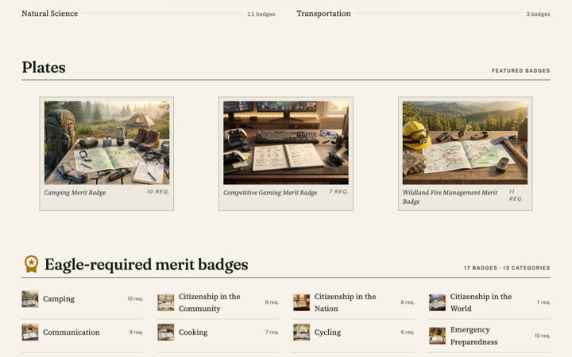
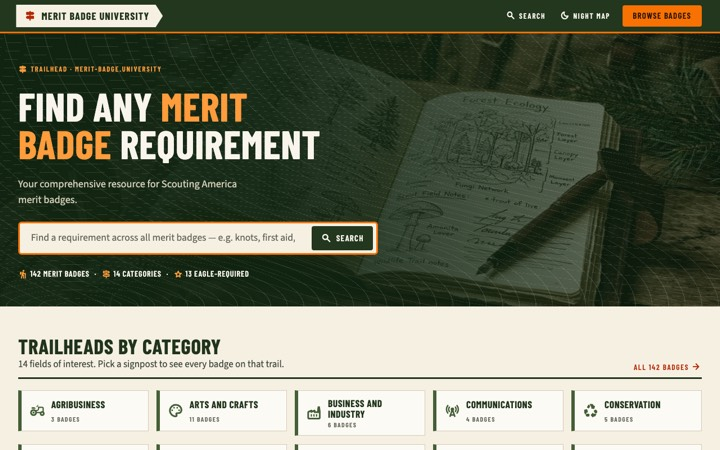
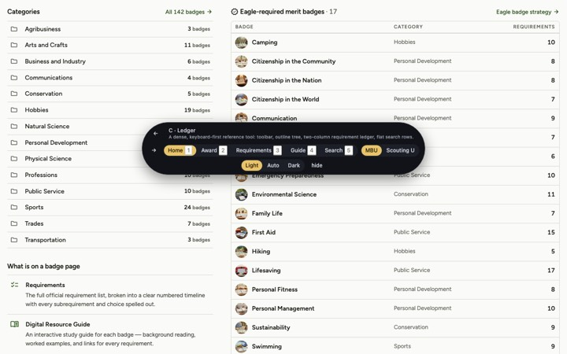
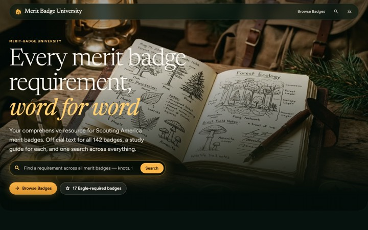
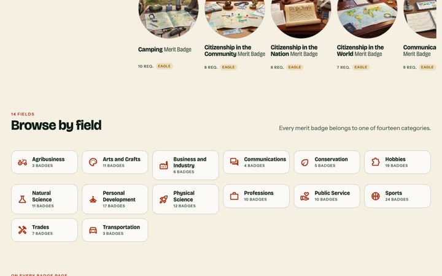
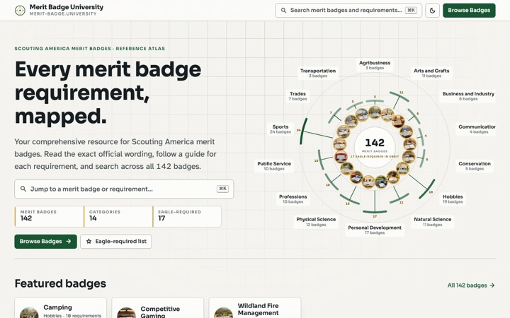

Prototype · uni-theme · Merit Badge University + Scouting University
Seven cohesive redesigns, each rendering the same five pages for both sites from one template and the real data: landing page, award (merit badge / rank) landing page, requirements page, Digital Resource Guide page and search results. Five core options, plus two that push what modern CSS and the web platform can do.

The site reads like the printed Scout handbook: table of contents, chapter openers, hanging numbers, marginalia and plates.
Tan paper and olive-black ink, handbook red as the one accent, gold only for Eagle marks. Fraunces + Source Serif 4 + Public Sans small caps.
Open all five pages →
Every page answers “where am I, where next, how far”: wayfinding borrowed from topographic maps, trailhead kiosks and blaze markers.
Olive and tan ground, blaze orange accent, CSS contour-line texture. Condensed grotesque labels with a sturdy body sans.
Open all five pages →
A fast, dense reference tool for counselors and leaders: a docs site, not a brochure. Density, scannability, keyboard-first search.
Olive-tinted greys, one green accent, 1px rules, tight radii, tabular numerals. One neutral sans for everything.
Open all five pages →
The campfire at night. Dark-first and cinematic: emblems glow like lanterns on layered forest greens with amber light.
Near-black greens, lantern amber, pale moss; soft glows and translucent borders. Light theme is “dawn”. Elegant serif display with a soft humanist sans.
Open all five pages →
The page is a journey you scroll through: pinned stacking scenes, a progress rail that fills, elements entering on their own view timelines, view transitions between pages. Native CSS only.
Slate-green, canvas, ember red-orange, chalk white; big photographic moments. Variable display face with axes animated on scroll.
Open all five pages →
A spatial reference instrument: a radial atlas of badges, a requirement wheel, a ⌘K command palette on every page, popovers anchored to the thing they describe.
Graphite and bone instrument surfaces, deep green primary, brass gold ticks, hairline rules on a 4px grid. Geometric sans with tabular numerals.
Open all five pages →Inside an option, the floating bar at the bottom switches page (1–5), site (S), theme (D) and option (← →); H hides the bar. Links inside the mock pages route to the matching mocked page; anything not mocked shows a small notice.
Each row is one structural decision. The options were deliberately made to disagree on these, so you can mix: “B’s header with E’s requirements” is a real answer. Each cell links to the page where that choice is visible.
Content. Real data from both repos: all 10 Camping requirements with children, modes and resources; all 11 Tenderfoot groups (27 requirements) with the fitness lists and the official notes; the Camping Hazards and Square Knot guide pages; the live “knots” / “knot” search results.
Rules. Official requirement text appears verbatim at body size and is set apart from curated titles without a third typeface. Requirement paths, completion modes, Eagle-required and rank level are treated as data with a designed home on every option.
Platform. Static HTML and CSS, Google Fonts only, no iframes (videos are poster cards that link out), responsive to phone width, light and dark themes, reduced-motion safe. Everything shown maps onto Hugo partials in uni-theme.